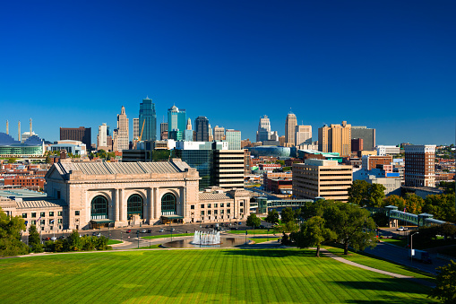
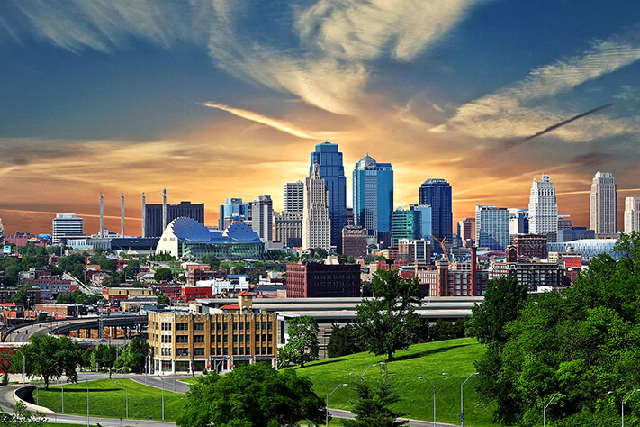
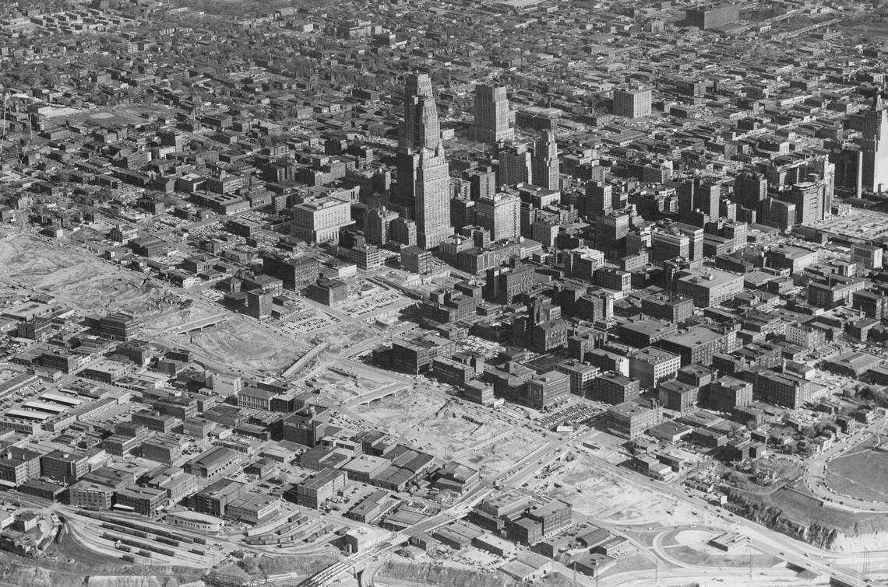
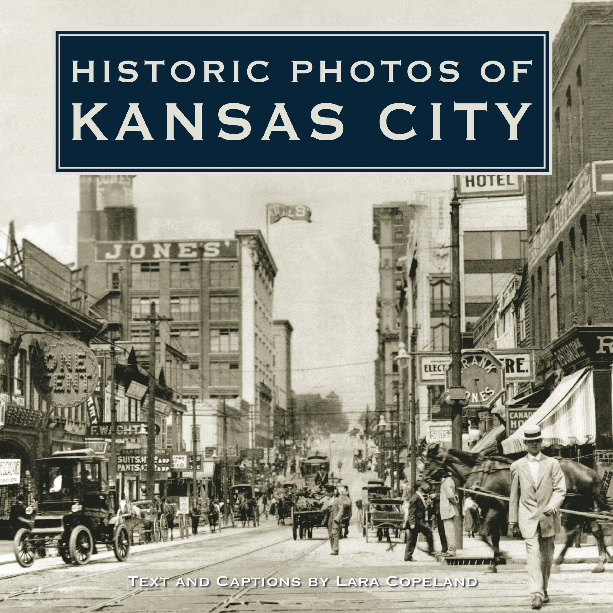

The Main Idea
The main idea for this website is to give people a good idea of what Kansas City is about and known for. When it comes to BBQ, KC is king
and we wanted to give people some of our favorite places to explore to. We also wanted to give unique ideas to check out when it comes
to when they come to KC for an experience they would not be able to get in another city. I think if you need some ideas of where
to go in KC, we have you covered and hope you enjoy. Feel free to leave a comment below so we an collaborate and let people know how great KC can be!


The Uniqueness
The uniqueness of our website comes from the collaboration between Kevin Floyd, Andrew Floyd, and Hussein Sakkoky. We have worked hard to
come up with a list of places that we believe will create a wonderful, custom experience for people wanting to tour KC and learn more
about the history and what it has to offer!